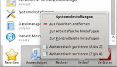
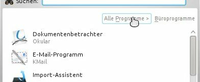
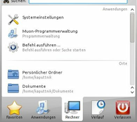
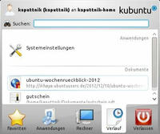

Kickoff
Dieser Artikel wurde für die folgenden Ubuntu-Versionen getestet:
Ubuntu 14.04 Trusty Tahr
Kickoff ist das Menü der KDE Arbeitsfläche. Das Menü wurde im Rahmen des OpenSuSE-Projekts speziell unter dem Gesichtspunkt der Benutzerfreundlichkeit entwickelt. So wurde viel Wert darauf gelegt, dass man möglichst schnell ein Programm findet und die Mauswege möglichst kurz sind.
Installation¶
Kickoff ist integraler Bestandteil des KDE-Desktops und muss nicht extra installiert werden, es ist immer automatisch enthalten.
Benutzung¶
Kickoff wird geöffnet über einen Klick auf den "K-Menü"-Schaltfläche in der Kontrollleiste.
Kategorien¶
| Kategorien |
Das Menü ist in mehrere Kategorien aufgeteilt. Beim Start wird immer die Kategorie "Favoriten" geöffnet. Die Auswahl einer Kategorie erfolgt durch Klicken auf die gewünschte Kategorie.
Favoriten¶
|  |
| Kontextmenü der Favoriten |
"Favoriten" ist die erste Kategorie und zeigt einige installierte KDE Programme. Neue Einträge können durch das Kontextmenü eines beliebigen Eintrags in einer anderen Kategorie hinzugefügt werden. Somit ist es auch möglich Ordner oder Dateien in den Favoriten abzulegen. Über das Kontextmenü (siehe Bild) kann man Einträge entfernen oder alphabetisch sortieren lassen. Die Reihenfolge der Einträge ist auch einfach über Drag&Drop veränderbar.
Anwendungen¶
|  |
| Navigation durch Ebenen |
Die Kategorie "Anwendungen" kommt an zweiter Stelle in der Auswahlliste der Kategorien. Sie enthält das klassische Menü, so wie man es vom traditionellen K-Menü kennt. Kickoff öffnet ein Untermenü jedoch nicht in einem neuen Menü, sondern öffnet das Untermenü anstelle des aktuell ausgewählten Menüs. Dies ermöglicht ein leichteres Navigieren, da die Mauswege bedeutend kürzer sind und das Menü übersichtlicher ist, da nicht mehrere Untermenüs nebeneinander angezeigt werden. Um zum vorherigen Menü zurück zu kommen, klickt man auf den entsprechenden Eintrag oberhalb der Anwendungssymbole (sieh Bild).
Rechner¶
|  |
| Kategorie Rechner |
Die Kategorie "Rechner" zeigt Programme zur Konfiguration, Orte und Wechselmedien. Unter Programme werden unter anderem die Systemeinstellungen und KRunner aufgeführt. Die Orte enthalten die gleichen Einträge wie die Orte in Dolphin. Das Hinzufügen und Entfernen eines Ortes in Dolphin wirkt sich auch auf die angezeigten Einträge hier in Kickoff aus. Öffnet man einen der Einträge in Orte wird auch wie erwartet die Dateiverwaltung im ausgewählten Ort geöffnet. Sobald ein Wechselmedium wie ein USB-Stick oder eine CD an den Rechner angeschlossen ist, wird dieses ebenfalls in der Kategorie Rechner angezeigt. Das Öffnen eines solchen Eintrags führt ebenfalls zum Öffnen der Dateiverwaltung. Zusätzlich lässt sich das Wechselmedium über das Kontextmenü auswerfen, also die Einbindung lösen.
Verlauf¶
|  |
| Kategorie Verlauf |
Die Kategorie "Verlauf" listet die zuletzt gestarteten Programme und Dokumente auf. Die Liste der kürzlich verwendeten Programme und Dokumente kann über das Kontextmenü geleert werden.
Verlassen¶
Die letzte Kategorie "Verlassen" enthält Einträge zur Abmelden und Ausschalten des Rechners. Die Einträge sind selbsterklärend.
Suche¶
Mit der "Suche" existiert eigentlich eine weitere Kategorie. Diese wird geöffnet, indem man einen Suchbegriff in das Suchfeld, welches am oberen Rand von Kickoff angezeigt wird, eintippt. Es reicht auch einfach mit dem Tippen zu beginnen, man muss nicht extra mit der Maus in das Feld klicken. Es wird eine Suchliste angezeigt, die passende Einträge anzeigt.
Konfiguration¶
Über das Kontextmenü der K-Menü-Schaltfläche in der Kontrollleiste erreicht man über "K-Menü Einstellungen" den Konfigurationsdialog für Kickoff. Hier kann eingestellt werden, ob die Kategorien durch Überfahren der Maus gewechselt werden.
Menü editieren¶
Um weitere Programme zum Menü hinzuzufügen öffnet man das Kontextmenü der K-Schaltfläche und wählt den Menüpunkt "Menü-Editor". Eine genaue Beschreibung des Menü-Editors findet man hier.
Klassisches Menü¶
Um zum klassischen KDE Menü wie in KDE 3 zu wechseln ist denkbar einfach. Man muss nur das Kontextmenü der K-Schaltfläche öffnen und den Menüpunkt "Zum klassischen Menüstil wechseln" auswählen. Danach kann man über den Menüpunkt "Zum Kickoff-Menüstil wechseln" wieder auf Kickoff umstellen.

- Erstellt mit Inyoka
-
 2004 – 2017 ubuntuusers.de • Einige Rechte vorbehalten
2004 – 2017 ubuntuusers.de • Einige Rechte vorbehalten
Lizenz • Kontakt • Datenschutz • Impressum • Serverstatus -
Serverhousing gespendet von